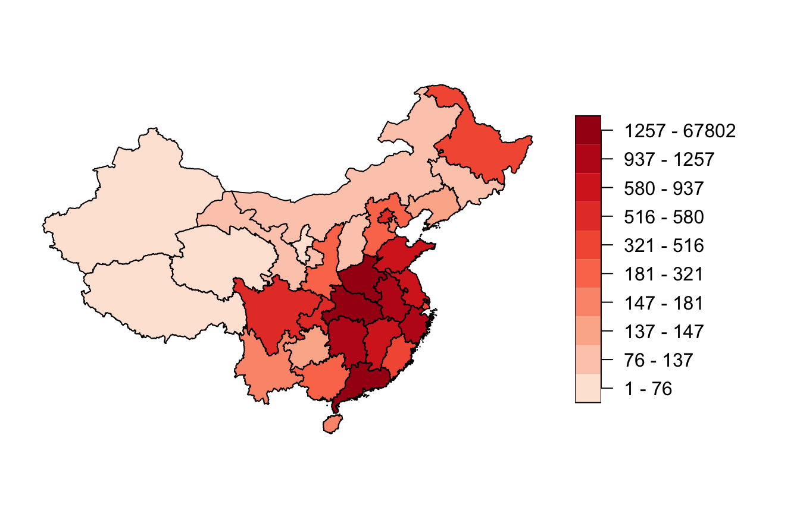
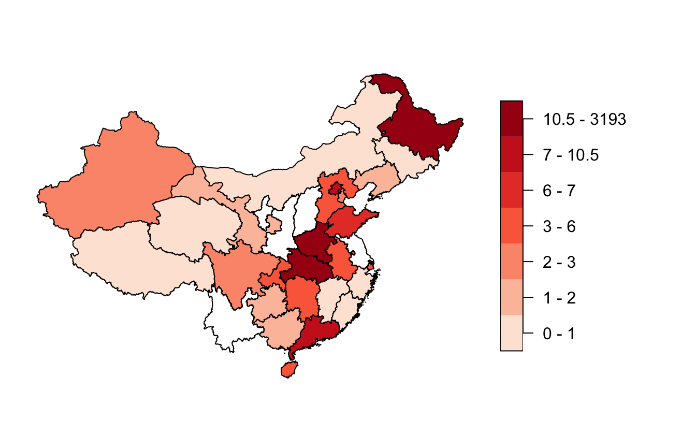
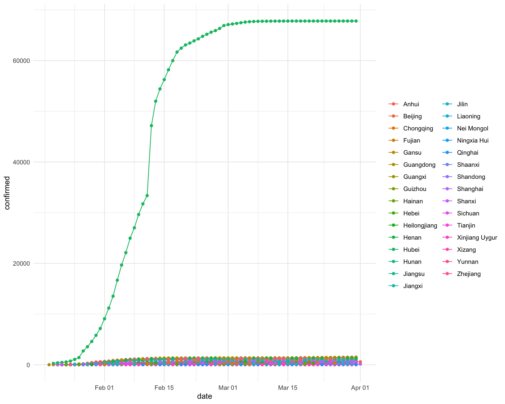
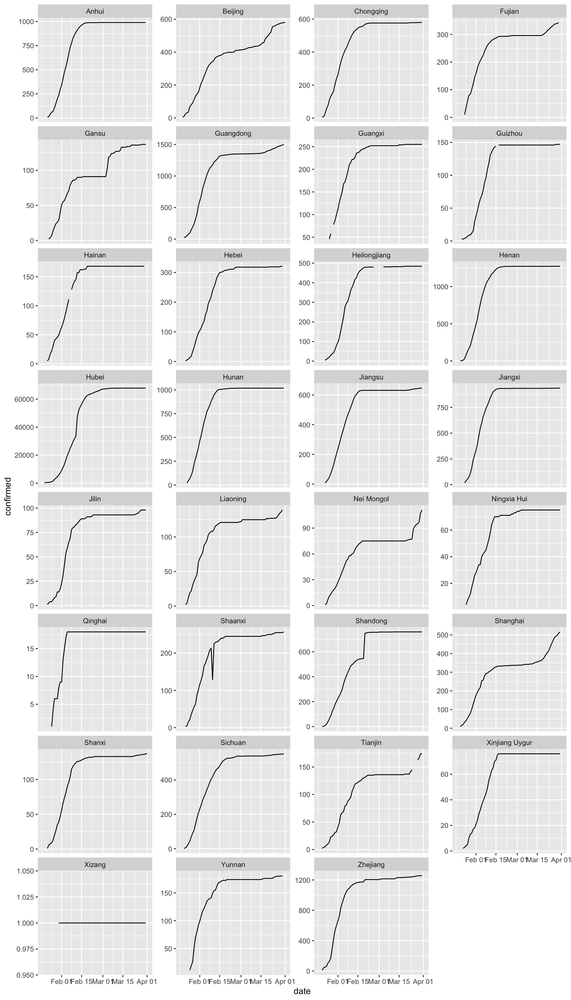
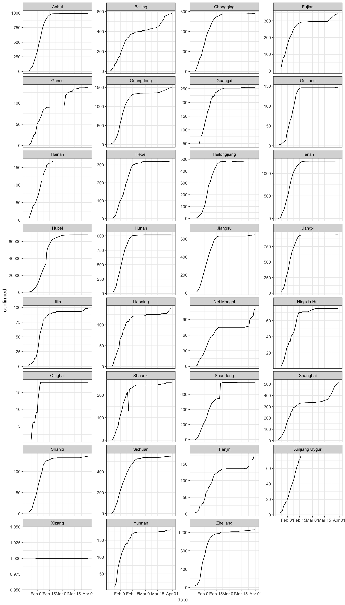
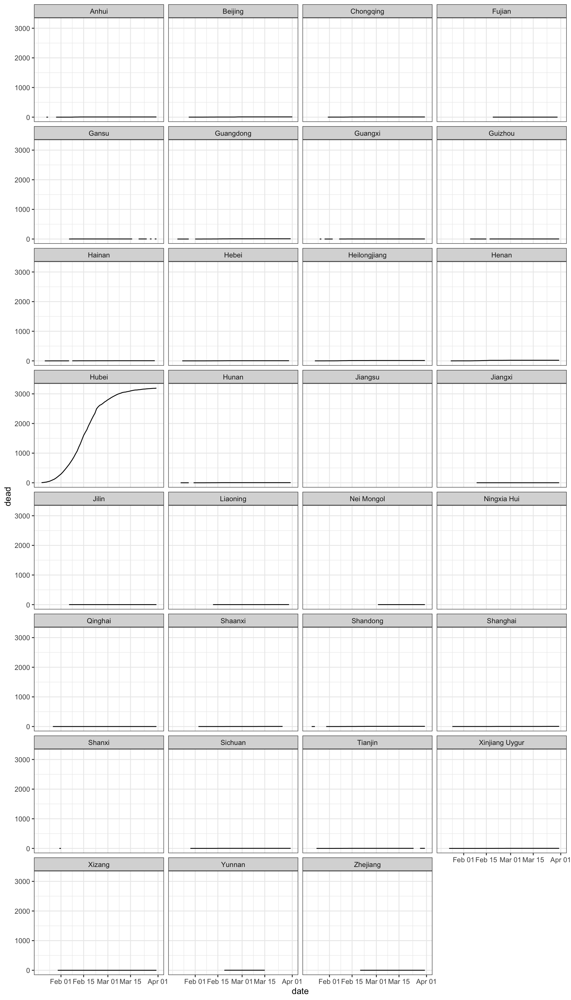
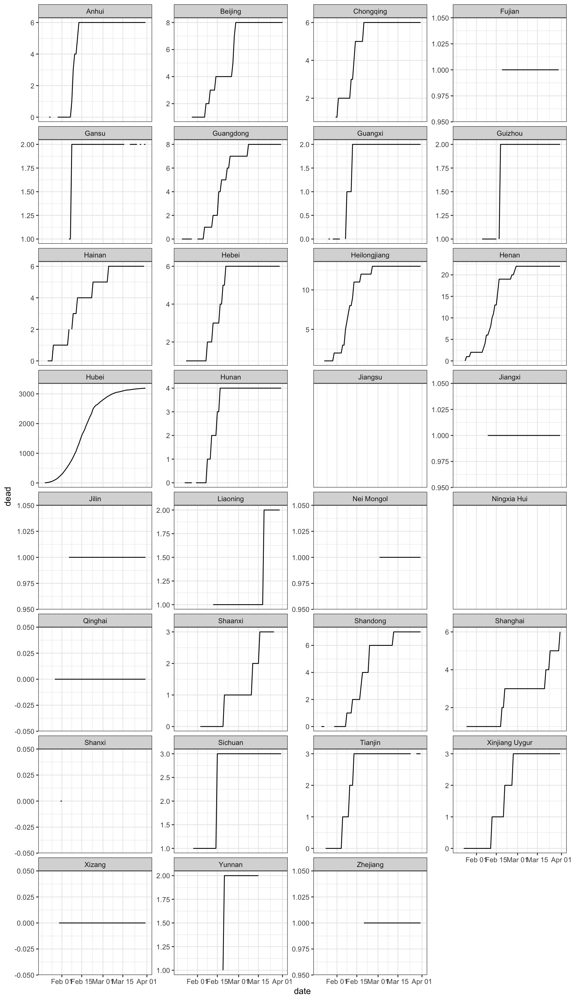

vignettes/visualisation_china.Rmd
visualisation_china.RmdIn this vignette, we show how to perform the OxCOVID19 Database visualisation examples shown here using R and the oxcovid19 package.
Here we further demonstrate the use of the oxcovid19 functions in tandem with the dplyr functions to query the PostgreSQL server. In addition, we demonstrate the use of sf functions to retrieve the administrative_division which is a spatial layer of boundary shapes of various countries and various administrative units within countries.
This is similar to what we have already demonstrated in previous vignettes. Here we retrieve the epidemiology table and query it for records coming from CHN_ICL source and for records at the subnational level for China.
library(oxcovid19) library(magrittr) library(dplyr) connect_oxcovid19() %>% get_table(tbl_name = "epidemiology") %>% filter(source == "CHN_ICL", !is.na(adm_area_1)) %>% arrange(desc(date)) #> # Source: lazy query [?? x 15] #> # Database: postgres [covid19@covid19db.org:5432/covid19] #> # Ordered by: desc(date) #> source date country countrycode adm_area_1 adm_area_2 adm_area_3 tested #> <chr> <date> <chr> <chr> <chr> <chr> <chr> <int> #> 1 CHN_I… 2020-04-01 China CHN Shanxi <NA> <NA> NA #> 2 CHN_I… 2020-04-01 China CHN Beijing <NA> <NA> NA #> 3 CHN_I… 2020-03-31 China CHN Zhejiang <NA> <NA> NA #> 4 CHN_I… 2020-03-31 China CHN Xizang <NA> <NA> NA #> 5 CHN_I… 2020-03-31 China CHN Xinjiang … <NA> <NA> NA #> 6 CHN_I… 2020-03-31 China CHN Tianjin <NA> <NA> NA #> 7 CHN_I… 2020-03-31 China CHN Sichuan <NA> <NA> NA #> 8 CHN_I… 2020-03-31 China CHN Shanxi <NA> <NA> NA #> 9 CHN_I… 2020-03-31 China CHN Shanghai <NA> <NA> NA #> 10 CHN_I… 2020-03-31 China CHN Shandong <NA> <NA> NA #> # … with more rows, and 7 more variables: confirmed <int>, recovered <int>, #> # dead <int>, hospitalised <int>, hospitalised_icu <int>, quarantined <int>, #> # gid <chr>
Then, here, we get the latest records for each subnational unit.
chn_recent_region <- connect_oxcovid19() %>% get_table(tbl_name = "epidemiology") %>% filter(source == "CHN_ICL", !is.na(adm_area_1)) %>% group_by(adm_area_1) %>% filter(as.Date(date) == max(as.Date(date), na.rm = TRUE)) %>% select(date, country, adm_area_1, confirmed, recovered, dead, gid) %>% collect()
#> # A tibble: 31 x 7
#> # Groups: adm_area_1 [31]
#> adm_area_1 date country confirmed recovered dead gid
#> <chr> <date> <chr> <int> <int> <int> <pq__text>
#> 1 Anhui 2020-03-31 China 990 984 6 {CHN.1_1}
#> 2 Beijing 2020-04-01 China 580 418 8 {CHN.2_1}
#> 3 Chongqing 2020-03-31 China 579 570 6 {CHN.3_1}
#> 4 Fujian 2020-03-30 China 343 295 1 {CHN.4_1}
#> 5 Gansu 2020-03-31 China 137 127 2 {CHN.5_1}
#> 6 Guangdong 2020-03-31 China 1501 1357 8 {CHN.6_1}
#> 7 Guangxi 2020-03-31 China 255 250 2 {CHN.7_1}
#> 8 Guizhou 2020-03-31 China 147 144 2 {CHN.8_1}
#> 9 Hainan 2020-03-30 China 168 162 6 {CHN.9_1}
#> 10 Hebei 2020-03-30 China 321 310 6 {CHN.10_1}
#> # … with 21 more rowsIn this step, we retrieve the spatial layer for China at subnational level from the server using the function get_layer. The resulting output is an sf class object.
chn_admin_1 <- connect_oxcovid19() %>% get_layer(ccode = "CHN", adm = 1) %>% collect()
#> Simple feature collection with 31 features and 14 fields
#> geometry type: GEOMETRY
#> dimension: XY
#> bbox: xmin: 73.5577 ymin: 18.15931 xmax: 134.7716 ymax: 53.56004
#> geographic CRS: WGS 84
#> First 10 features:
#> country countrycode countrycode_alpha2 adm_level adm_area_1 adm_area_1_code
#> 1 China CHN CN 1 Guizhou CHN.8_1
#> 2 China CHN CN 1 Anhui CHN.1_1
#> 3 China CHN CN 1 Beijing CHN.2_1
#> 4 China CHN CN 1 Chongqing CHN.3_1
#> 5 China CHN CN 1 Fujian CHN.4_1
#> 6 China CHN CN 1 Gansu CHN.5_1
#> 7 China CHN CN 1 Guangdong CHN.6_1
#> 8 China CHN CN 1 Guangxi CHN.7_1
#> 9 China CHN CN 1 Hainan CHN.9_1
#> 10 China CHN CN 1 Hebei CHN.10_1
#> adm_area_2 adm_area_2_code adm_area_3 adm_area_3_code gid latitude
#> 1 <NA> <NA> <NA> <NA> CHN.8_1 26.81518
#> 2 <NA> <NA> <NA> <NA> CHN.1_1 31.82579
#> 3 <NA> <NA> <NA> <NA> CHN.2_1 40.18491
#> 4 <NA> <NA> <NA> <NA> CHN.3_1 30.05865
#> 5 <NA> <NA> <NA> <NA> CHN.4_1 26.08106
#> 6 <NA> <NA> <NA> <NA> CHN.5_1 37.82079
#> 7 <NA> <NA> <NA> <NA> CHN.6_1 23.33520
#> 8 <NA> <NA> <NA> <NA> CHN.7_1 23.82701
#> 9 <NA> <NA> <NA> <NA> CHN.9_1 19.19553
#> 10 <NA> <NA> <NA> <NA> CHN.10_1 39.54574
#> longitude
#> 1 106.8741
#> 2 117.2262
#> 3 116.4107
#> 4 107.8748
#> 5 117.9899
#> 6 100.9339
#> 7 113.4153
#> 8 108.7866
#> 9 109.7458
#> 10 116.1301
#> properties
#> 1 {"CC_1": null, "GID_0": "CHN", "GID_1": "CHN.8_1", "HASC_1": "CN.GZ", "NAME_0": "China", "NAME_1": "Guizhou", "TYPE_1": "Shěng", "ENGTYPE_1": "Province", "NL_NAME_1": "貴州|贵州", "VARNAME_1": "Gùizhōu"}
#> 2 {"CC_1": null, "GID_0": "CHN", "GID_1": "CHN.1_1", "HASC_1": "CN.AH", "NAME_0": "China", "NAME_1": "Anhui", "TYPE_1": "Shěng", "ENGTYPE_1": "Province", "NL_NAME_1": "安徽|安徽", "VARNAME_1": "Ānhuī"}
#> 3 {"CC_1": null, "GID_0": "CHN", "GID_1": "CHN.2_1", "HASC_1": "CN.BJ", "NAME_0": "China", "NAME_1": "Beijing", "TYPE_1": "Zhíxiáshì", "ENGTYPE_1": "Municipality", "NL_NAME_1": "北京|北京", "VARNAME_1": "Běijīng"}
#> 4 {"CC_1": null, "GID_0": "CHN", "GID_1": "CHN.3_1", "HASC_1": "CN.CQ", "NAME_0": "China", "NAME_1": "Chongqing", "TYPE_1": "Zhíxiáshì", "ENGTYPE_1": "Municipality", "NL_NAME_1": "重慶|重庆", "VARNAME_1": "Chóngqìng"}
#> 5 {"CC_1": null, "GID_0": "CHN", "GID_1": "CHN.4_1", "HASC_1": "CN.FJ", "NAME_0": "China", "NAME_1": "Fujian", "TYPE_1": "Shěng", "ENGTYPE_1": "Province", "NL_NAME_1": "福建", "VARNAME_1": "Fújiàn"}
#> 6 {"CC_1": null, "GID_0": "CHN", "GID_1": "CHN.5_1", "HASC_1": "CN.GS", "NAME_0": "China", "NAME_1": "Gansu", "TYPE_1": "Shěng", "ENGTYPE_1": "Province", "NL_NAME_1": "甘肅|甘肃", "VARNAME_1": "Gānsù"}
#> 7 {"CC_1": null, "GID_0": "CHN", "GID_1": "CHN.6_1", "HASC_1": "CN.GD", "NAME_0": "China", "NAME_1": "Guangdong", "TYPE_1": "Shěng", "ENGTYPE_1": "Province", "NL_NAME_1": "廣東|广东", "VARNAME_1": "Guǎngdōng"}
#> 8 {"CC_1": null, "GID_0": "CHN", "GID_1": "CHN.7_1", "HASC_1": "CN.GX", "NAME_0": "China", "NAME_1": "Guangxi", "TYPE_1": "Zìzhìqu", "ENGTYPE_1": "Autonomous Region", "NL_NAME_1": "廣西壯族自治區|广西壮族自治区", "VARNAME_1": "Guǎngxī Zhuàngzú"}
#> 9 {"CC_1": null, "GID_0": "CHN", "GID_1": "CHN.9_1", "HASC_1": "CN.HA", "NAME_0": "China", "NAME_1": "Hainan", "TYPE_1": "Shěng", "ENGTYPE_1": "Province", "NL_NAME_1": "海南", "VARNAME_1": "Hǎinán"}
#> 10 {"CC_1": null, "GID_0": "CHN", "GID_1": "CHN.10_1", "HASC_1": "CN.HB", "NAME_0": "China", "NAME_1": "Hebei", "TYPE_1": "Shěng", "ENGTYPE_1": "Province", "NL_NAME_1": "河北", "VARNAME_1": "Héběi"}
#> geometry
#> 1 MULTIPOLYGON (((109.5513 26...
#> 2 POLYGON ((116.5815 30.04759...
#> 3 POLYGON ((116.2377 39.51794...
#> 4 POLYGON ((109.232 28.8789, ...
#> 5 MULTIPOLYGON (((120.7168 26...
#> 6 POLYGON ((101.7742 33.54804...
#> 7 MULTIPOLYGON (((109.7414 21...
#> 8 MULTIPOLYGON (((108.4797 21...
#> 9 MULTIPOLYGON (((109.5334 19...
#> 10 MULTIPOLYGON (((115.1205 36...Using the epidemiology data and the spatial layer we’ve retrieved, we create an overall spatial layer object for epidemiology data.
## Load sf package for spatial objects library(sf) chn_recent_region <- chn_recent_region %>% mutate(gid = as.character(stringr::str_remove_all(string = gid, pattern = "\\{|\\}"))) %>% left_join(y = chn_admin_1, by = "gid") %>% st_as_sf()
#> Simple feature collection with 31 features and 20 fields
#> geometry type: GEOMETRY
#> dimension: XY
#> bbox: xmin: 73.5577 ymin: 18.15931 xmax: 134.7716 ymax: 53.56004
#> geographic CRS: WGS 84
#> # A tibble: 31 x 21
#> adm_area_1.x date country.x confirmed recovered dead gid country.y
#> <chr> <date> <chr> <int> <int> <int> <chr> <chr>
#> 1 Anhui 2020-03-31 China 990 984 6 CHN.… China
#> 2 Beijing 2020-04-01 China 580 418 8 CHN.… China
#> 3 Chongqing 2020-03-31 China 579 570 6 CHN.… China
#> 4 Fujian 2020-03-30 China 343 295 1 CHN.… China
#> 5 Gansu 2020-03-31 China 137 127 2 CHN.… China
#> 6 Guangdong 2020-03-31 China 1501 1357 8 CHN.… China
#> 7 Guangxi 2020-03-31 China 255 250 2 CHN.… China
#> 8 Guizhou 2020-03-31 China 147 144 2 CHN.… China
#> 9 Hainan 2020-03-30 China 168 162 6 CHN.… China
#> 10 Hebei 2020-03-30 China 321 310 6 CHN.… China
#> # … with 21 more rows, and 13 more variables: countrycode <chr>,
#> # countrycode_alpha2 <chr>, adm_level <int>, adm_area_1.y <chr>,
#> # adm_area_1_code <chr>, adm_area_2 <chr>, adm_area_2_code <chr>,
#> # adm_area_3 <chr>, adm_area_3_code <chr>, latitude <dbl>, longitude <dbl>,
#> # properties <pq_jsonb>, geometry <GEOMETRY [°]>Using the spatial layer object of epidemiology data in subnational units of China, we can create choropleth maps. Here we map the confirmed cases per subnational unit in China.
chn_recent_region <- chn_recent_region %>% mutate(confirmed_class = cut(chn_recent_region$confirmed, breaks = quantile(x = chn_recent_region$confirmed, probs = seq(from = 0, to = 1, by = 0.1)), include.lowest = TRUE)) levels(chn_recent_region$confirmed_class) <- levels(chn_recent_region$confirmed_class) %>% stringr::str_replace_all(pattern = ",", replacement = " - ") %>% stringr::str_replace_all(pattern = "1.26e\\+03", replacement = "1257") %>% stringr::str_replace_all(pattern = "6.78e\\+04", replacement = "67802") %>% stringr::str_remove_all(pattern = "\\[|\\]|\\(") plot(chn_recent_region["confirmed_class"], main = "", pal = colorRampPalette(colors = RColorBrewer::brewer.pal(n = 5, name = "Reds"))(10), nbreaks = 10, breaks = "quantile", key.width = lcm(5))

Here we map the deaths per subnational unit in China.
chn_recent_region <- chn_recent_region %>% mutate(dead_class = cut(chn_recent_region$dead, breaks = unique(quantile(x = chn_recent_region$dead, probs = seq(from = 0, to = 1, by = 0.1), na.rm = TRUE)), include.lowest = TRUE)) levels(chn_recent_region$dead_class) <- levels(chn_recent_region$dead_class) %>% stringr::str_replace_all(pattern = ",", replacement = " - ") %>% stringr::str_replace_all(pattern = "3.19e\\+03", replacement = "3193") %>% stringr::str_remove_all(pattern = "\\[|\\]|\\(") plot(chn_recent_region["dead_class"], main = "", pal = colorRampPalette(colors = RColorBrewer::brewer.pal(n = 5, name = "Reds"))(7), nbreaks = 7, breaks = "quantile", key.width = lcm(5))

In the example from the Oxford COVID-19 Database, epidemiology data was checked for monotonicity. It is expected that epidemiology data is monotonic as these variables are expected to increase over time given that the information is cumulative. Monotonicity was checked by plotting a time series of cases and deaths with the expectation that the line plots will be on an increasing trajectory over time. Any instance of dips in the time series would indicate violation of monotonicity and an indication of issues with the data.
In the Oxford COVID-19 Database example, time series line plot for each subnational unit was plotted on the same axis as shown below.
library(ggplot2) connect_oxcovid19() %>% get_table(tbl_name = "epidemiology") %>% filter(source == "CHN_ICL", !is.na(adm_area_1)) %>% arrange(desc(date)) %>% ggplot(mapping = aes(x = date, y = confirmed, colour = adm_area_1)) + geom_line() + geom_point() + scale_colour_discrete(name = NULL) + theme_minimal()

Given that Hubei province had the most cases compared to all subnational units, the plot shows one time series curve with significantly more cases that anywhere else whilst all other units had a flat time series curve. This is not necessarily a good way to check monotonicity in all units as only Hubei province time series information is shown clearly.
In the plot below, we try to more clearly distinguish the time series for each subnational unit by showing a line plot for each unit separate. However, this only solves the issue of time series line plots being clearly demarcated from others. The curves, however, still does not show the true pattern for all units other than Hubei.
connect_oxcovid19() %>% get_table(tbl_name = "epidemiology") %>% filter(source == "CHN_ICL", !is.na(adm_area_1)) %>% arrange(desc(date)) %>% ggplot(mapping = aes(x = date, y = confirmed)) + geom_line() + facet_wrap( ~ adm_area_1, ncol = 4) + theme_bw()

We address this by allowing the y-axis for each subnational time series plot to be appropriate for the data for the specific unit as below. Here we are able to see the time series plots for each subunit and able to verify whether monotonicity is observed.
connect_oxcovid19() %>% get_table(tbl_name = "epidemiology") %>% filter(source == "CHN_ICL", !is.na(adm_area_1)) %>% arrange(desc(date)) %>% ggplot(mapping = aes(x = date, y = confirmed)) + geom_line() + facet_wrap( ~ adm_area_1, ncol = 4, scales = "free_y") + theme_bw()

Unfortunately, one subnational unit (Shaanxi Province) has a dip in cases within the time series plot which breaks monotonicity. This would indicate something inconsistent with the data. This needs to be checked.
In the next plots, we perform the same procedures but with the data on deaths. All subnational units demonstrate monotonicity with regard to number of deaths.
connect_oxcovid19() %>% get_table(tbl_name = "epidemiology") %>% filter(source == "CHN_ICL", !is.na(adm_area_1)) %>% arrange(desc(date)) %>% ggplot(mapping = aes(x = date, y = dead)) + geom_line() + facet_wrap( ~ adm_area_1, ncol = 4) + theme_bw()

connect_oxcovid19() %>% get_table(tbl_name = "epidemiology") %>% filter(source == "CHN_ICL", !is.na(adm_area_1)) %>% arrange(desc(date)) %>% ggplot(mapping = aes(x = date, y = dead)) + geom_line() + facet_wrap( ~ adm_area_1, ncol = 4, scales = "free_y") + theme_bw()
